SinCriticArt
"Juanma Cifuentes construye un papel lleno de matices donde conviven el artificio teatral y una verdad profundamente humana."
Sobre El jardín de los cerezos
Leer críticaActor · Tenor Cómico · Director de Escena · Docente
Cuatro décadas de oficio entre la escena y la pantalla
De Albacete, del 68, y con las tablas puestas desde antes de saber caminar bien. Se formó en la RESAD y acabó en el Piccolo Teatro di Milano con Giorgio Strehler —sí, el Strehler— aprendiendo el oficio de verdad. Por si fuera poco, pasó por la Escuela Superior de Canto de Madrid y se trajo de vuelta una voz de tenor cómico que todavía hoy le saca de más de un apuro.
En teatro ha hecho de todo: verso clásico, Commedia dell'Arte, Shakespeare en inglés, clásico español... Ha trabajado con gente como Grotowski, Peter Brook, Adolfo Marsillach, Eugenio Barba, Luca Ronconi, Verónica Forqué, Gustavo Tambascio, Juan Carlos Pérez de la Fuente e Ignacio García. Y no, no se lo está inventando. En 2004 se llevó el Premio al Mejor Actor en el Festival Internacional Teatro Avante de Miami por su Sancho Panza en el texto de Fernando Fernán Gómez.
En tele lo habrás visto mil veces sin saber que era él: Aquí no hay quien viva, Gym Tony, La que se avecina... Esos personajes que te sabes de memoria. Ahora la cosa va en otra dirección: Nos vemos en otra vida (Disney+, 2024), La huella del mal —presentada en el Festival de Málaga 2025—, y Sin Gluten en TVE. Poco a poco, sin prisa.
Cuando no está delante de una cámara o en un escenario, está en Albacete al frente de la Escuela El 18, pasándole a sus alumnos todo lo que lleva cuatro décadas aprendiendo. Sin poses, sin rollos teóricos: puro oficio.

El número de la calle y el día en que nació Juanma — el 18 de enero. Su número de la suerte. En ese local de la Calle Padre Romano de Albacete montó algo que es las tres cosas a la vez: escuela de interpretación, sala de ensayos y teatro alternativo de pequeño formato.
Empezó alquilándolo para ensayar sus propios montajes cuando volvía a su ciudad. El arquitecto vio el potencial escénico. Los alumnos empezaron a llamar. Y lo que iba a ser solo un sitio para ensayar se convirtió en un espacio donde el oficio se vive desde dentro.
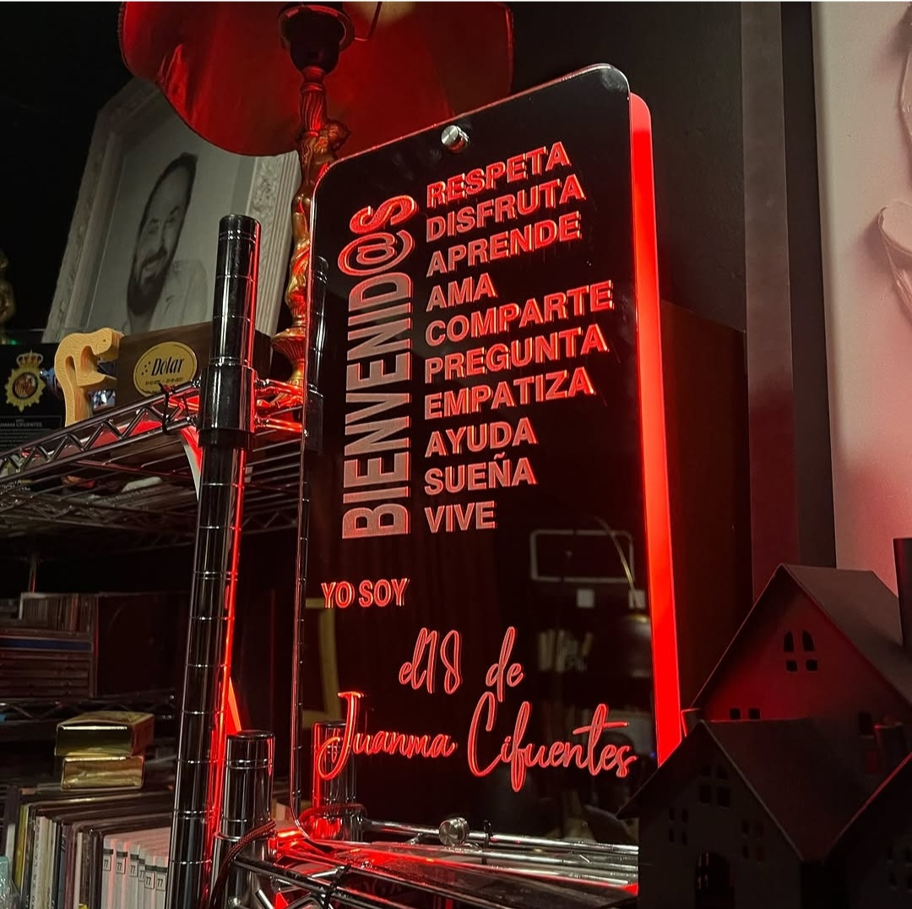
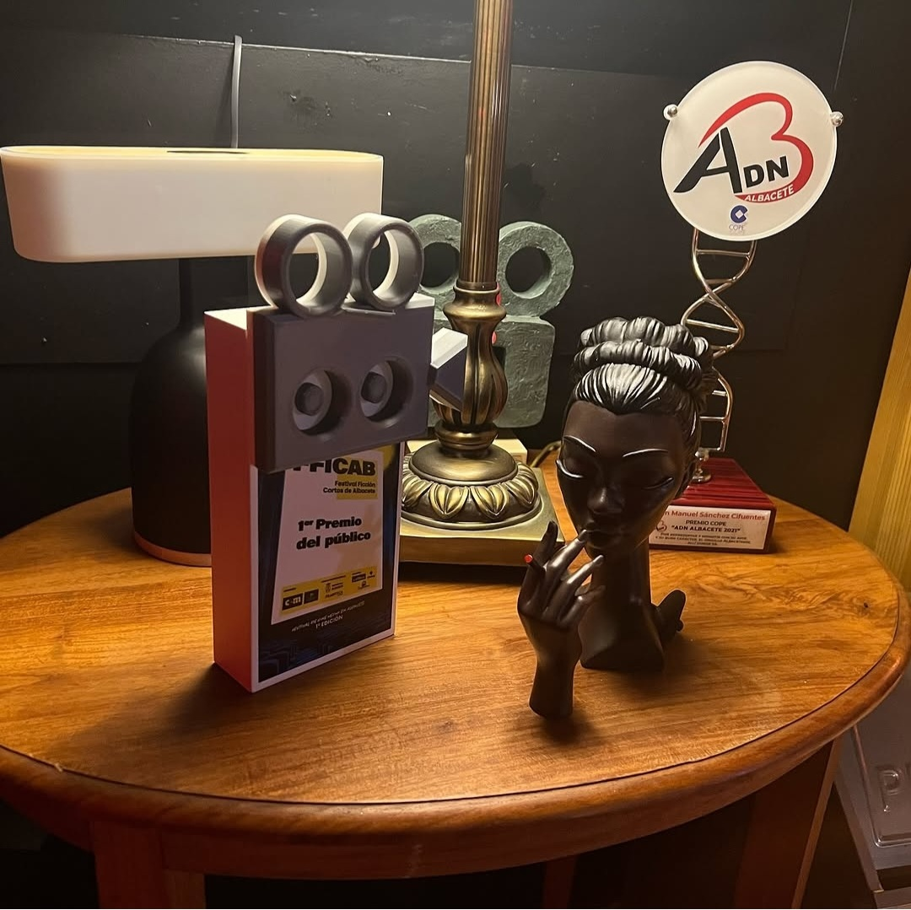
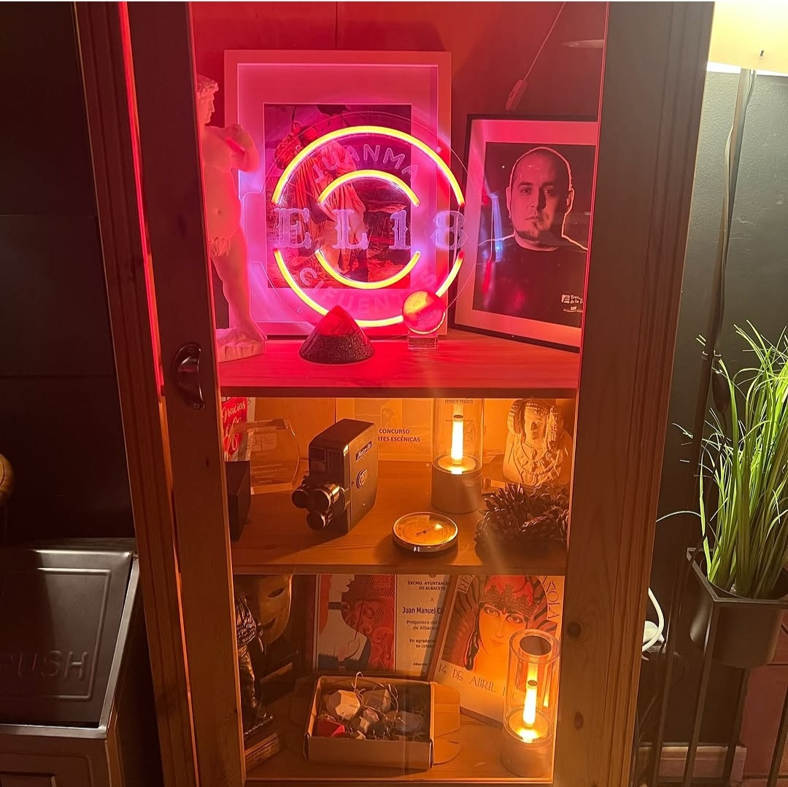
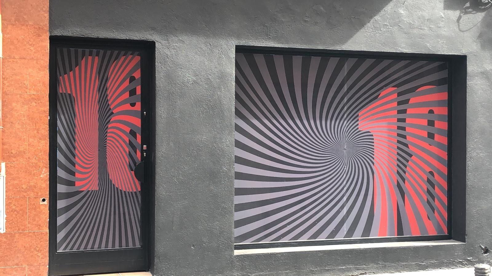
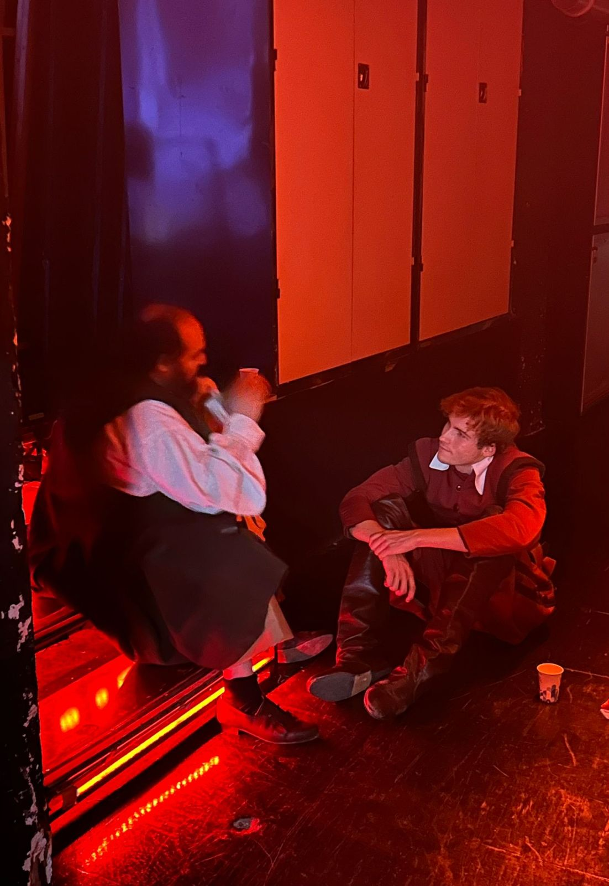
Clases de interpretación, preparación de acceso a la RESAD y otras escuelas superiores de arte dramático, y preparación de castings específicos. Formación personalizada y profesionalizante — para quien quiere ir en serio.
El uso original del espacio: un local diáfano sin columnas, totalmente flexible, que Juanma alquiló para ensayar sus montajes cuando estaba en Albacete. Disponible también para compañías y proyectos ajenos.
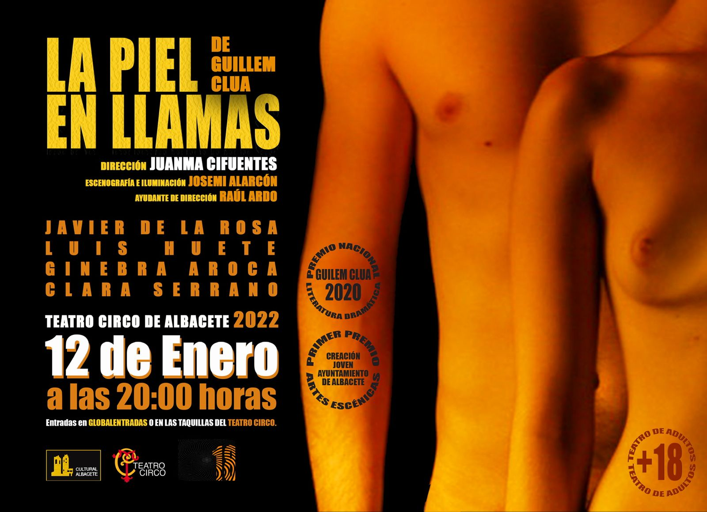
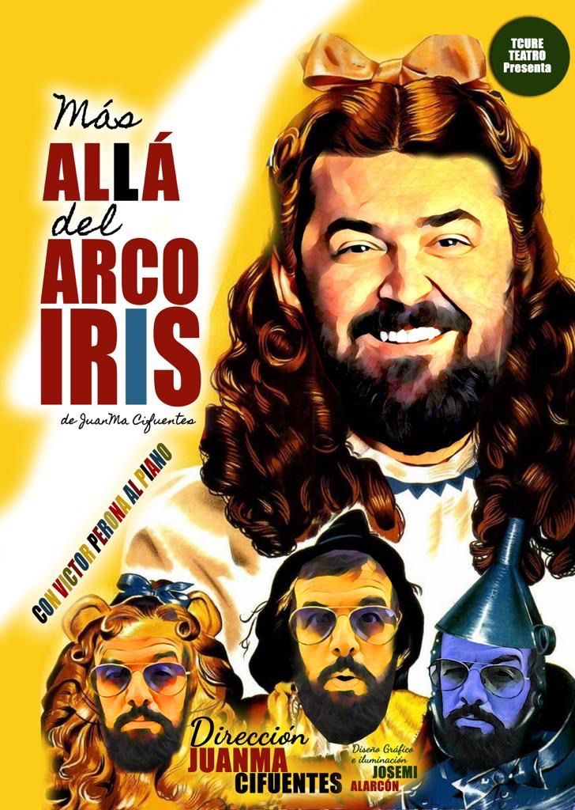

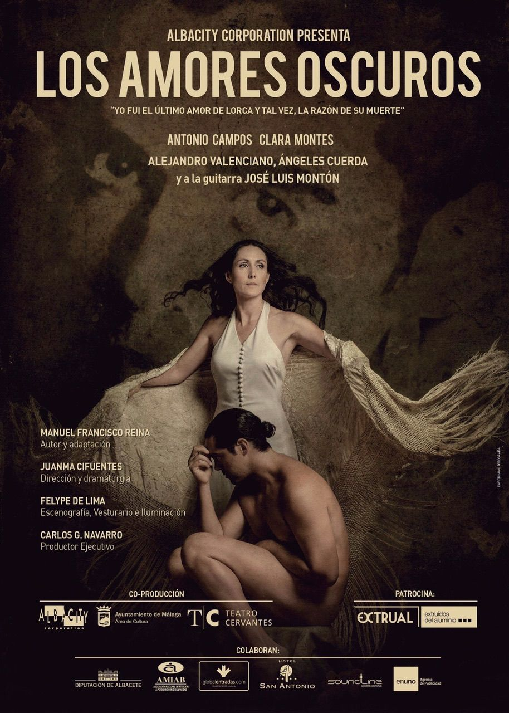
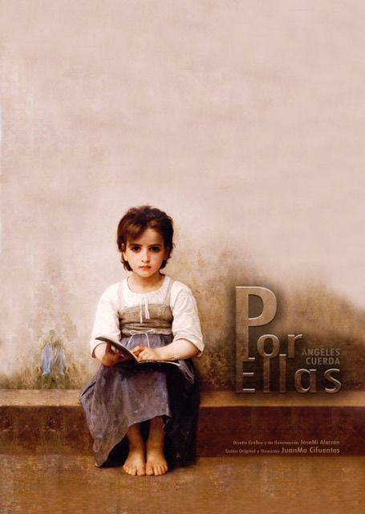
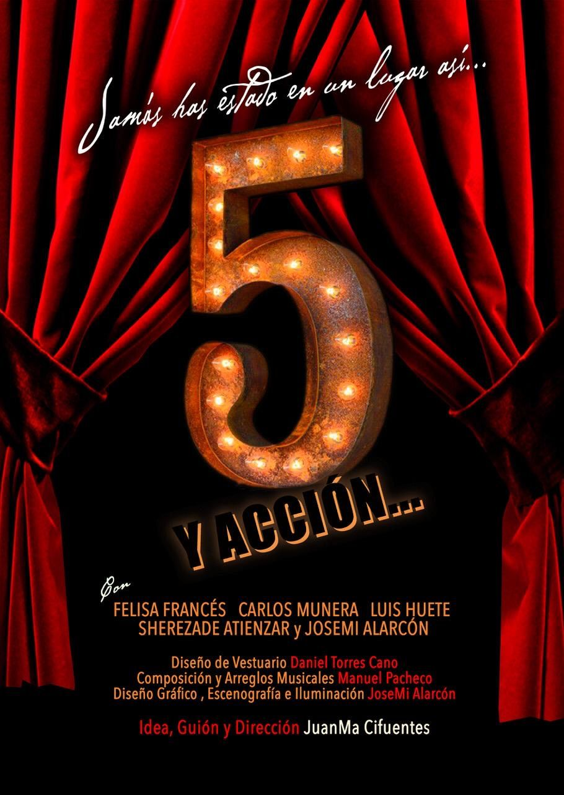
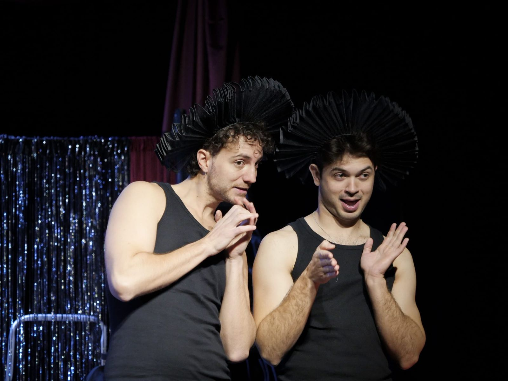
Sala de pequeño formato (~50 espectadores) al estilo de los espacios independientes madrileños: La Escalera de Jacob, Nave 73, La Cuarta Pared. Un hueco en Albacete para el teatro que no cabe en los circuitos grandes.
"El contacto con el público es lo más importante, porque es donde el actor aprende su oficio."
Cuatro décadas de escenario dan una perspectiva que no se obtiene en ningún aula. Juanma enseña desde la experiencia directa: lo que ha funcionado, lo que ha fallado y por qué. Parte teórica, parte práctica con exposición de trabajos, y siempre la misma exigencia que él se aplica a sí mismo.
Próximamente, docente en la Escuela Internacional de Cine de la UCAM — donde llevará al aula de cine el mismo rigor que lleva treinta años exigiendo en el escenario.
"Cualquier persona que tenga cuatro nociones ya cree que puede enseñar, y el problema es que no es así." En El 18 se aprende desde dentro, no desde un manual.
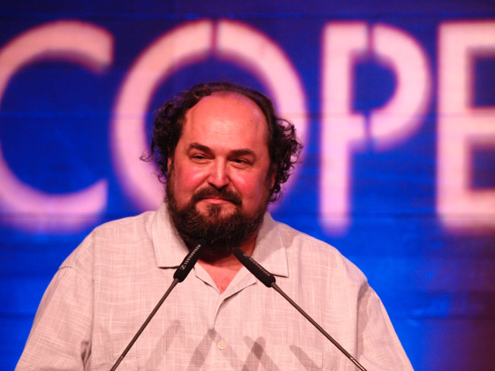
Premio ADN
Albacete COPE
2021
"Por representar con orgullo su tierra natal y por su implicación cultural y artística en la provincia."
C/ Padre Romano nº 18 · Albacete
En el centro, junto al Ayuntamiento
Elige cuánto tiempo tienes y el tipo de teatro que te pide el cuerpo. El ejercicio llega solo.
Cuatro décadas en una sola línea, al estilo de la cronología de Shakespeare: las eras de fondo, los trabajos en medio y los hitos en rojo. Las imágenes van apareciendo conforme cada obra entra en pantalla.
Es lunes. Tienes un plan. ¿Cómo acaba?
Alguien entra en tu vida con cara de buenas personas. Tú...
¿Cómo defines tu relación con el pasado?
¿Cuál es tu superpoder?
Cuatro décadas de oficio y todavía hay cosas que solo sabe quien le conoce de verdad. Aquí van algunas.
0 minutos solo. 30 minutos solo. 45 minutos solo. Una hora solo. El que llama antes de tiempo tiene un problema.
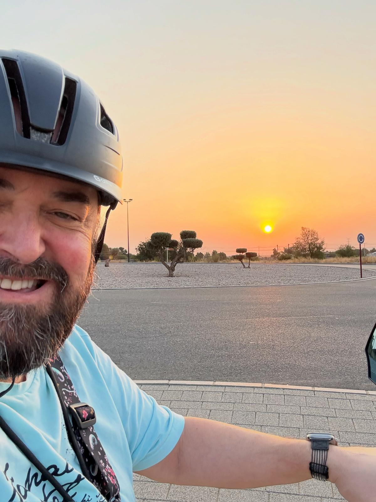
Recorre Albacete en bicicleta cuando no está de gira. Dice que es donde mejor piensa a los personajes.
Teatro del Siglo de Oro, novela negra española. Sobre todo el Quijote.
Flamenco. Ópera. Zarzuela. Jazz. Blues. Todo en mi vida es música. Extremoduro ¿por qué no? Rosalía cuando no queda otra que verla.
Solo cuando ya ha salido la temporada entera. Nada de esperar semana a semana. Dice que le rompe el ritmo.
Tres respiraciones profundas y se dice en voz baja el nombre del personaje. Siempre en ese orden.
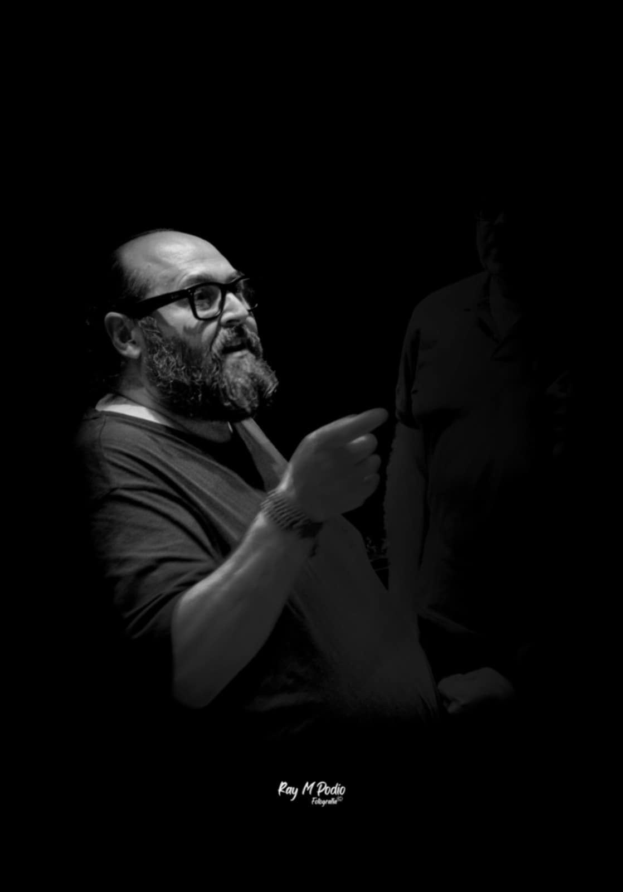
Dirás este pasaje con soltura de lengua, no con voz desentonada, como lo hacen muchos de nuestros actores; más valdría entonces dar mis versos al pregonero para que los dijese.
Ni manotees así, acuchillando el aire: moderación en todo; puesto que aun en el torrente, la tempestad, y por mejor decir, el huracán de las pasiones, se debe conservar aquella templanza que hace suave y elegante la expresión.
A mí me desazona en extremo ver a un hombre que a fuerza de gritos estropea los afectos que quiere exprimir, y rompe y desgarra los oídos del vulgo rudo. Herodes de farsa, más furioso que el mismo Herodes. Evita este vicio.
Ni seas tampoco demasiado frío; tu misma prudencia debe guiarte. La acción debe corresponder a la palabra, y ésta a la acción, cuidando siempre de no atropellar la simplicidad de la naturaleza.
No hay defecto que más se oponga al fin de la representación que, desde el principio hasta ahora, ha sido y es: ofrecer a la naturaleza un espejo en que vea la virtud su propia forma, el vicio su propia imagen, cada nación y cada siglo sus principales caracteres.
Si esta pintura se exagera o se debilita, excitará la risa de los ignorantes; pero no puede menos de disgustar a los hombres de buena razón, cuya censura debe ser para vosotros de más peso que la de toda la multitud que llena el teatro.
Yo he visto representar a algunos cómicos que otros aplaudían con entusiasmo, por no decir con escándalo; los cuales no tenían acento ni figura de cristianos, ni de gentiles, ni de hombres; que al verlos hincharse y bramar, no los juzgué de la especie humana, sino unos simulacros rudos de hombres, hechos por algún mal aprendiz. Tan inicuamente imitaban la naturaleza.
Cuidad también que no añadan nada a lo que está escrito en su papel; porque algunos de ellos, para hacer reír a los oyentes más adustos, empiezan a dar risotadas cuando el interés del drama debería ocupar toda la atención. Esto es indigno, y manifiesta demasiado en los necios que lo practican el ridículo empeño de lucirlo.
"Juanma Cifuentes construye un papel lleno de matices donde conviven el artificio teatral y una verdad profundamente humana."
Sobre El jardín de los cerezos
Leer crítica"Juanma Cifuentes hace unos malabares brillantes lanzando al aire verdad y artificio a la vez, que es tan arriesgado como hacerlos lanzando mazas y pelotas."
Sobre El jardín de los cerezos
Leer crítica"Juanma Cifuentes sube Albacete al escenario."Leer artículo
{kind=link}
{kind=link}
{kind=link}
{kind=link}
{kind=link}
{kind=link}
{kind=link}